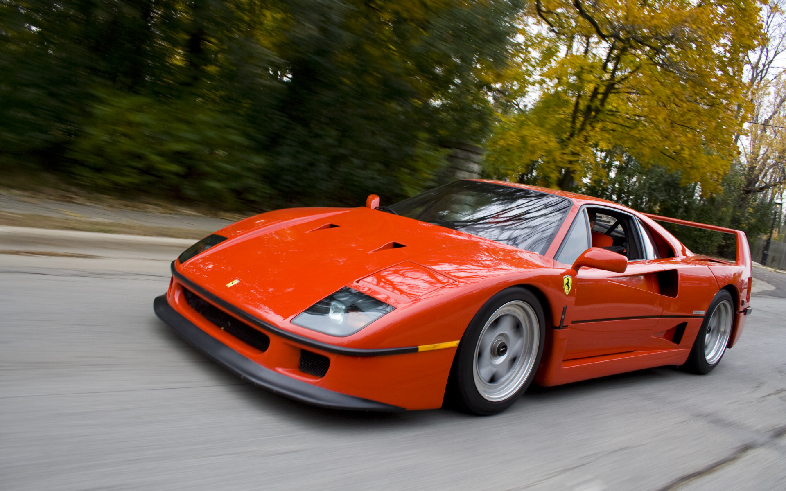

Ferrari NV car
Эмблема Ferrari — гарцующий жеребец на жёлтом фоне — впервые появилась на печатных материалах и официальных документах компании в 1929 году. Однако в то время «Гарцующий жеребец» не изображался на машинах, так как они принадлежали Alfa Romeo и имели собственную эмблему в виде клеверного листа на белом фоне треугольной формы.

Ferrari
- «В качестве заводской марки я продолжал использовать изображение вздыбленного коня, которое появилось у меня сначала на машинах Scuderia Ferrari. История этого вздыбленного коня простая и забавная. Такую эмблему нес на своем истребителе Франческо Баракка, с первой мировой войны. Его сбили под Монтелло. Когда в 1923 году я выступил на трассе „чиркуито дель Савио“ в Равенне, я познакомился с графом Энрико Баракка, отцом героя. Он представил меня своей жене, графине Паолине Баракка, которая однажды предложила: Феррари, а почему бы вам не изобразить вздыбленного коня моего сына на вашем гоночном автомобиле? Он принесет вам удачу.
Ferrari